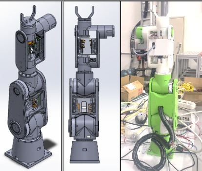
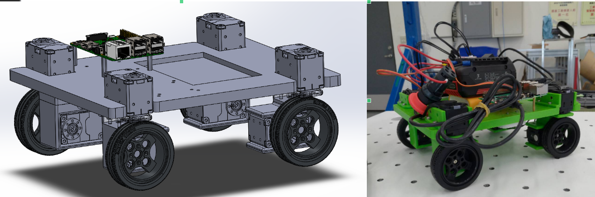
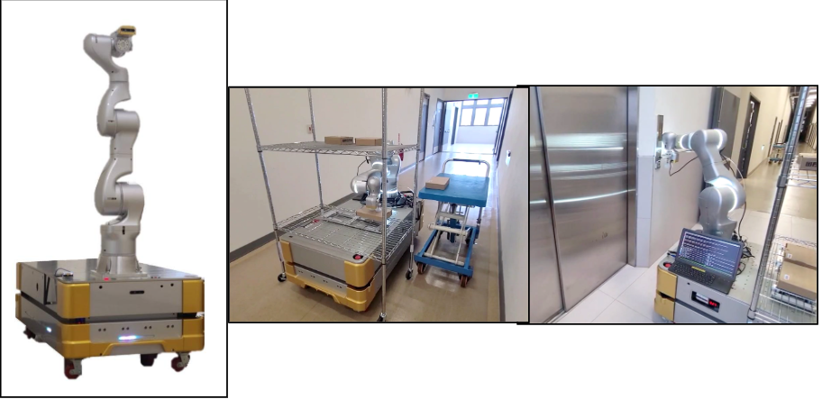

The kitchen robot needed to perform complex, contact-rich manipulation tasks that were difficult to hand-code with classical planning. I was tasked with building an end-to-end imitation learning pipeline to let the robot learn these behaviors directly from demonstrations. I built a low-latency teleoperation system to collect expert demonstrations, then used the LeRobot framework to train a diffusion policy that maps image and robot-state observations to joint commands. The trained policy was deployed on the real robot and reproduced the demonstrated behaviors successfully in practical tests.
Motion Planning & Control
Dual Arm Motion Planning & Control Framework
A dual-arm kitchen robot needed to execute a full cooking workflow that mixed structured manipulation tasks with tasks too complex to hand-plan, while keeping hardware cost low. I built the planning and control framework to handle both: MoveIt2 plus model-based and GPU-based planners computed smooth trajectories for structured tasks like pick-and-place, while a trained policy handled the tasks that needed more intelligence, and a Behavior Tree sequenced these subtasks into the overall cooking process. On the hardware side, I integrated and evaluated three different arm and end-effector combinations to find the best cost-performance fit for kitchen work, and built a ROS-based digital twin sharing the same control and state interface as the real robot, so upper-level algorithms could be validated in simulation before matching real-world behavior.
Low Latency and Intuitive Teleoperation Framework
Recording expert demonstrations for imitation learning required intuitive, low-latency teleoperation, but the common options each had drawbacks: joint-space leader-follower control (ALOHA-style) has a low learning curve but is hard to master and couples the leader and follower, so collected data can't be shared across robot configurations; Cartesian-space control with a tracker or controller is more intuitive but can suffer from inverse-kinematics issues. I initiated this project and designed a framework in which different sensors or tools control different robot parts — arm, gripper, and hand — supporting both Cartesian-space and our own version of joint-space teleoperation. The framework enabled smooth, accurate data collection, though both modes still lack force feedback to the operator, which causes the robot to repeatedly fault on contact-rich tasks — a known limitation for future work.
Robot Arm Teach and Play
Manually programming an industrial robot arm was tedious and required specialized skill, and hand-guiding it posed a safety risk without any assistive force. I derived the dynamic model for each joint and designed gravity-compensation and assistive-force algorithms, implemented through the controller's torque-control interface, to enable intuitive teach-and-play control. This improved ease of use and increased operator safety in manual programming scenarios.
Robot arm Online trajectory generation
A robot arm application needed to adjust a pre-planned trajectory's pose in real time — for example to compensate for a shifted workpiece — without recomputing or distorting the path's shape. I formulated a deterministic real-time trajectory compensation algorithm on an IntervalZero KINGSTAR real-time EtherCAT controller running a 1 kHz control loop, allowing a fixed trajectory's pose to be updated on the fly while preserving its relative path. This delivered smooth, responsive robot movement with real-time path compensation.
Hardware & System Integration
3D printed Robot Arm

I wanted a custom 6-axis robot arm platform for research and prototyping, built from scratch rather than off the shelf. I designed all the mechanical components, selected Harmonic Drive gearing with Maxon EPOS4 Flat motors and drivers as the actuation unit, and assembled the full arm, then developed the accompanying motion-planning framework for control. The result was a working 6-axis arm with 1 kg payload capable of essential robotic arm movements and control.
Electrical Stove Integration
Image / video placeholder
The kitchen robot needed automated flame control, but the traditional Chinese stove it worked with only had manual mechanical controls. I designed and built a custom electronic stove control unit and implemented the state-machine logic governing flame transitions during cooking operation. This improved system responsiveness and task stability under real-world kitchen conditions, and the design is named as an invention in US patent application 2026/0110436 A1, currently under review.
Swerve Drive Mobile Robot Control

A mobile robot platform needed agile, omnidirectional movement with high precision to operate reliably in dynamic environments. I built an 8-DOF swerve-drive mobile robot prototype and implemented its control and navigation algorithm within the ROS2 control framework, delivering agile, omnidirectional movement with high precision in dynamic environments.
Industrial Mobile Robot and Robot Arm OEM

The company needed OEM-manufactured robot arm and mobile robot hardware that met its technical requirements, along with the software to actually run it. I served as the client-side point of contact for the OEM vendor, selecting and confirming specifications and key components and verifying deliverables against spec, then integrated the hardware with our ROS control framework and developed the arm's path planning and the mobile robot's localization and navigation.
Robot Arm and AOI Integration
Spray-gun quality inspection was done manually and was prone to human error. I integrated a robot arm with an AOI (automated optical inspection) machine, deploying a pick-and-place cell with optical sensors to automate the quality checks, reducing human inspection errors.